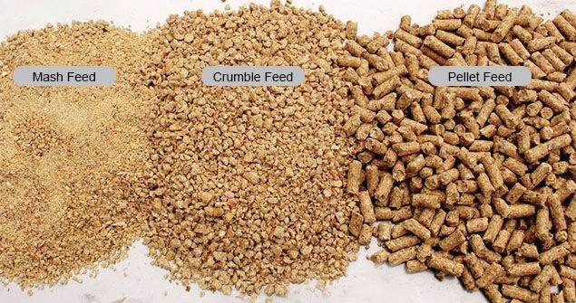

due to their feeding habit of picking the big particles. Pellet feeds are most suitable for broilers. There is no chance of deficiencies with pellet feeds as every particle picked is balanced. However, feeding pellet feeds may invite undesirable behaviour in birds. This is because birds tend to feed fast and remain idle.
Crumble feeds: These feeds are produced when pellets are introduced to a cracker/pellets disintegrator to produce a product between mash and pellets. They have the advantage of pellets because they are mostly fed to younger chicks. It enables the chicks to get all nutrients that are in the ration. It also reduces wastage and increases feed efficiency. Figure 10.11 shows mash, crumble and pellet feed forms.

Feeding methods
Proper feeding of chickens helps them to grow fast. Most feeding methods are more applicable to birds that are kept in confinement than those under free range. The methods suggested for feeding birds include ad libitum, restricted and free choice feeding.
Ad libitum feeding: This means providing feed to an animal at all times. Ad libitum feeding is done gradually to allow the animal to consume while increasing amounts of feed until it leaves behind at least 15% of the amount that had been offered. Ad libitum feeding is commonly applied in fast-growing birds, for example, broilers.